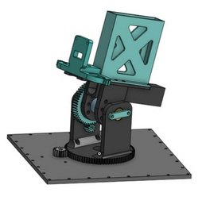
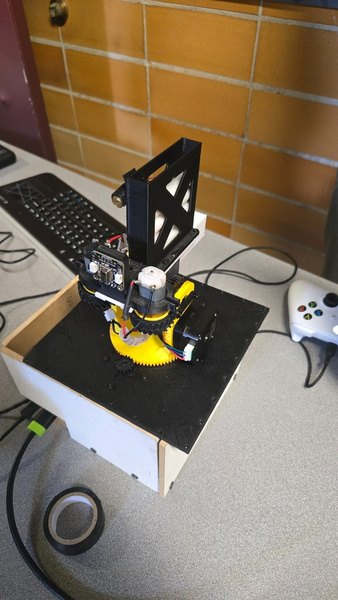
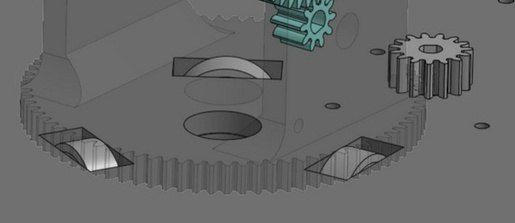
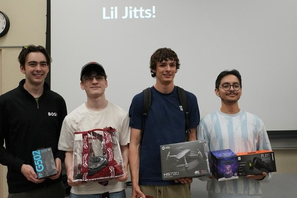

Two-Axis Nerf Turret
At a 24-hour hackathon my team built a two-axis Nerf turret that rotates a full 360 degrees, feeds from a gravity magazine, and turns on a custom thrust bearing. An Arduino and a Raspberry Pi drove the motors and servos. I went through several indexer designs for the servo rotation to tighten up rigidity and tolerances as we assembled. We took second out of 40 teams, with our highest marks for complexity and completeness.



